FittestMeasureMaker¶
-
class
auxjad.FittestMeasureMaker(*, pitch_target: list, pitch_genes: list, attack_point_target: list, attack_point_genes: list, duration_unit: abjad.utilities.Duration.Duration = Duration(1, 16), units_per_window: int = 16, pitch_initial_individual: Optional[list] = None, attack_point_initial_individual: Optional[list] = None, population_size: int = 100, select_n_parents: int = 10, keep_n_parents: int = 0, mutation_chance: float = 0.2, mutation_index: float = 0.1, evaluation_index: float = 0.2, omit_time_signature: bool = False, time_signatures: Optional[list] = None, attack_points_mode: bool = False, pitch_score_bias: float = 0.5)[source]¶ This classes uses two
GeneticAlgorithm’s, one for pitch and another for attack points, in order to create musical measures. At each call of__call__(), it iterates the genetic algorithms by one generation, and returns anabjad.Selectioncreated with the fittest pitch and attack point individuals.Note
Many of the properties of this class reflect the behaviour of properties of
GeneticAlgorithm. Some, such aspopulation_size,select_n_parents,keep_n_parents,mutation_chance,mutation_index, andevaluation_index, have the same name as those inGeneticAlgorithm.pitch_targetandattack_point_target,pitch_genesandattack_point_genes, andpitch_initial_individualandattack_point_initial_individualwork asGeneticAlgorithm.target,GeneticAlgorithm.genes, andGeneticAlgorithm.initial_individual, respectively.For the details of how these properties work, please refer to
GeneticAlgorithm’s documentation page.- Basic usage:
At its basic, this class needs a target and a list of genes for both pitches and attack points. The evaluation function will compare all individuals in the population against this target when scoring them.
>>> measure_maker = auxjad.FittestMeasureMaker( ... pitch_target=["c'", "d'", "e'", "f'"], ... pitch_genes=["c'", "d'", "e'", "f'", "g'", "a'", "b'", "c''"], ... attack_point_target=[0, 4, 8, 12], ... attack_point_genes=list(range(16)), ... ) >>> repr(measure_maker) pitches: ["c'", "d'", "e'", "f'"] attack_points: [0, 4, 8, 12] >>> len(measure_maker) 4 >>> notes = measure_maker.target_music >>> staff = abjad.Staff(notes) >>> abjad.f(staff) \new Staff { \time 4/4 c'4 d'4 e'4 f'4 }
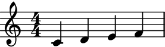Calling the instance will apply the genetic algorithm process and output an
abjad.Selectionwith the fittest individual in the population.>>> notes = measure_maker() >>> measure_maker.generation_number 0 >>> staff = abjad.Staff(notes) >>> abjad.f(staff) \new Staff { \time 4/4 c'4 f'4 ~ f'8. e'16 ~ e'8 a'8 }
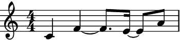Subsequent calls will create new generations of individuals, always outputting the fittest measure.
>>> notes = measure_maker() >>> measure_maker.generation_number 1 >>> staff = abjad.Staff(notes) >>> abjad.f(staff) \new Staff { \time 4/4 c'4 d'16 e'8. ~ e'4 ~ e'16 g'8. }
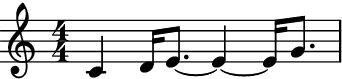output_n():The method
output_n()can be used to output n iterations of the process. They are output as a singleabjad.Selection:>>> measure_maker = auxjad.FittestMeasureMaker( ... pitch_target=["c'", "d'", "e'", "f'"], ... pitch_genes=["c'", "d'", "e'", "f'", "g'", "a'", "b'", "c''"], ... attack_point_target=[0, 4, 8, 12], ... attack_point_genes=list(range(16)), ... ) >>> notes = measure_maker.output_n(5) >>> staff = abjad.Staff(notes) >>> abjad.f(staff) \new Staff { \time 4/4 r4 r16 c'8. d'16 d'8. f'4 c'2 d'16 c''8. f'4 r16 c'8. d'4 f'4. f'8 c'4 d'8. e'16 ~ e'4 e'4 c'4 d'4 ~ d'16 e'8. e'4 }
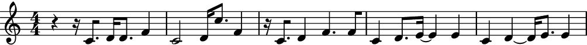pitch_genes:While
attack_point_genesmust always take alistofint’s,pitch_genescan take a variety of object types. The implementation of this class usesabjad.LeafMaker, so pitches can take any objects accepted by that class. These includeintandstrfor pitches,Nonefor rests,tuplefor chords, etc.>>> measure_maker = auxjad.FittestMeasureMaker( ... pitch_target=["c'", None, "e'", ("g'", "bf'")], ... pitch_genes=[None, ... "c'", ... "d'", ... "e'", ... "f'", ... "g'", ... ("g'", "a'"), ... ("g'", "bf'"), ... ("g'", "c''"), ... ], ... attack_point_target=[0, 4, 8, 12], ... attack_point_genes=list(range(16)), ... population_size=50, ... ) >>> notes = measure_maker.output_n(5) >>> staff = abjad.Staff(notes) >>> abjad.f(staff) \new Staff { \time 4/4 <g' c''>4 g'4 ~ g'16 <g' c''>8. <g' c''>4 c'2 e'8. r16 r4 c'4 r4 r16 e'8. <g' a'>4 c'4 r4 e'8. <g' a'>16 ~ <g' a'>4 c'4 r4 e'8. <g' a'>16 ~ <g' a'>4 }

Which is equivalent to:
>>> measure_maker = auxjad.FittestMeasureMaker( ... pitch_target=[0, None, 4, (7, 10)], ... pitch_genes=[None, 0, 2, 4, 5, 7, (7, 9), (7, 10), (7, 12)], ... attack_point_target=[0, 4, 8, 12], ... attack_point_genes=list(range(16)), ... population_size=50, ... ) >>> notes = measure_maker.output_n(5) >>> staff = abjad.Staff(notes) >>> abjad.f(staff) \new Staff { \time 4/4 <g' c''>4 g'4 ~ g'16 <g' c''>8. <g' c''>4 c'2 e'8. r16 r4 c'4 r4 r16 e'8. <g' a'>4 c'4 r4 e'8. <g' a'>16 ~ <g' a'>4 c'4 r4 e'8. <g' a'>16 ~ <g' a'>4 }
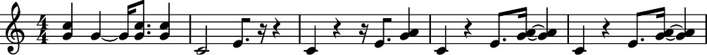units_per_windowandduration_unit:By default, there are
16attack points in a window, each lasting forabjad.Duration((1, 16)). These can be changed usingunits_per_windowandduration_unit:>>> measure_maker = auxjad.FittestMeasureMaker( ... pitch_target=["c'", "d'", "e'", "f'"], ... pitch_genes=["c'", "d'", "e'", "f'", "g'", "a'", "b'", "c''"], ... attack_point_target=[0, 8, 16, 24], ... attack_point_genes=list(range(32)), ... duration_unit=abjad.Duration((1, 32)), ... units_per_window=32, ... ) >>> notes = measure_maker.output_n(5) >>> staff = abjad.Staff(notes) >>> abjad.f(staff) \new Staff { \time 4/4 c'8. e'16 ~ e'16. e'32 ~ e'8 ~ e'32 b'4... c'8. d'16 ~ d'2 f'4 c'4 d'8.. e'32 ~ e'4 c'4 c'4 d'8.. e'32 ~ e'4 e'4 c'4 d'8.. e'32 ~ e'4 f'4 }
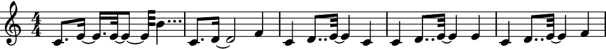omit_time_signature:By default, a time signature is added to the output automatically:
>>> measure_maker = auxjad.FittestMeasureMaker( ... pitch_target=["c'", "d'", "e'", "f'", "g'"], ... pitch_genes=["c'", "d'", "e'", "f'", "g'", "a'", "b'", "c''"], ... attack_point_target=[0, 4, 8, 12, 16], ... attack_point_genes=list(range(20)), ... units_per_window=20, ... ) >>> notes = measure_maker.output_n(5) >>> staff = abjad.Staff(notes) >>> abjad.f(staff) \new Staff { \time 5/4 r8 c'8 d'8 f'4. e'4.. g'16 c'8. d'16 ~ d'4 ~ d'16 g'16 f'8 ~ f'4 g'4 c'4 d'8. e'16 ~ e'4 a'4 f'4 c'4 d'8. g'16 ~ g'4 f'4 g'4 c'4 d'4 g'4 f'4 g'4 }
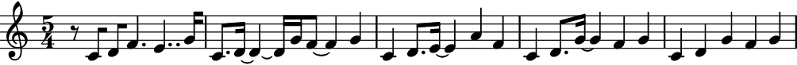Setting
omit_time_signaturetoTruewill result in no time signature. Note that the output might need to be cleaned up usingabjad.mutate().rewrite_meter().>>> measure_maker = auxjad.FittestMeasureMaker( ... pitch_target=["c'", "d'", "e'", "f'", "g'"], ... pitch_genes=["c'", "d'", "e'", "f'", "g'", "a'", "b'", "c''"], ... attack_point_target=[0, 4, 8, 12, 16], ... attack_point_genes=list(range(20)), ... units_per_window=20, ... omit_time_signature=True, ... ) >>> notes = measure_maker.output_n(5) >>> staff = abjad.Staff(notes) >>> abjad.f(staff) \new Staff { r8 c'8 d'8 f'4. e'4.. g'16 c'8. d'4. g'16 f'4. g'4 c'4 d'8. e'4 ~ e'16 a'4 f'4 c'4 d'8. g'4 ~ g'16 f'4 g'4 c'4 d'4 g'4 f'4 g'4 }
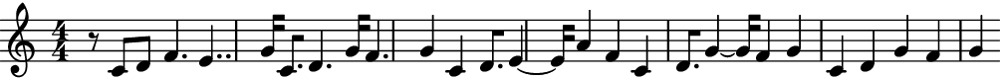time_signatures:Time signatures can also be enforced in the output. Set
time_signaturesto a singleabjad.TimeSignatureor alistofabjad.TimeSignature’s as needed.A single
abjad.TimeSignatureis applied to all measures:>>> measure_maker = auxjad.FittestMeasureMaker( ... pitch_target=["c'", "d'", "e'", "f'"], ... pitch_genes=["c'", "d'", "e'", "f'", "g'", "a'", "b'", "c''"], ... attack_point_target=[0, 4, 8, 12], ... attack_point_genes=list(range(16)), ... duration_unit=abjad.Duration((1, 32)), ... time_signatures=abjad.TimeSignature((2, 2)) ... ) >>> notes = measure_maker.output_n(5) >>> staff = abjad.Staff(notes) >>> abjad.f(staff) \new Staff { \time 2/2 r32 c''16. ~ c''32 f'16. ~ f'32 e'16. f'8 r2 r32 c'16. d'8 ~ d'16 e'16 e'8 r2 c'8. d'16 e'8 f'8 r2 r32 c'16. d'8 e'8 f'8 r2 r32 c'16. d'8 e'8 f'8 r2 }
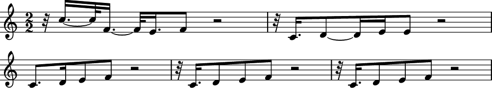A
listofabjad.TimeSignature’s is applied cyclically.>>> measure_maker = auxjad.FittestMeasureMaker( ... pitch_target=["c'", "d'", "e'", "f'", "g'"], ... pitch_genes=["c'", "d'", "e'", "f'", "g'", "a'", "b'", "c''"], ... attack_point_target=[0, 4, 8, 12, 16], ... attack_point_genes=list(range(20)), ... duration_unit=abjad.Duration((1, 16)), ... units_per_window=20, ... time_signatures=[abjad.TimeSignature((2, 4)), ... abjad.TimeSignature((3, 4)), ... ], ... ) >>> notes = measure_maker.output_n(5) >>> staff = abjad.Staff(notes) >>> abjad.f(staff) \new Staff { \time 2/4 r8 c'8 d'8 f'8 ~ \time 3/4 f'4 e'4.. g'16 \time 2/4 c'8. d'16 ~ d'4 ~ \time 3/4 d'16 g'16 f'4. g'4 \time 2/4 c'4 d'8. e'16 ~ \time 3/4 e'4 a'4 f'4 \time 2/4 c'4 d'8. g'16 ~ \time 3/4 g'4 f'4 g'4 \time 2/4 c'4 d'4 \time 3/4 g'4 f'4 g'4 }
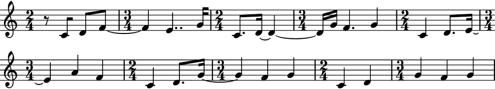pitch_score_bias:Pitches and attack points are scored separately and, by default, contribute equally to the total score of each individual. To change the bias of the pitch score, set
pitch_score_biasto a value between0.0and1.0.This is the default output:
>>> measure_maker = auxjad.FittestMeasureMaker( ... pitch_target=["c'", "d'", "e'", "f'"], ... pitch_genes=["c'", "d'", "e'", "f'", "g'", "a'", "b'", "c''"], ... attack_point_target=[0, 4, 8, 12], ... attack_point_genes=list(range(16)), ... ) >>> notes = measure_maker.output_n(5) >>> staff = abjad.Staff(notes) >>> abjad.f(staff) \new Staff { \time 4/4 r16 c'8 d'16 ~ d'4 f'4 d'4 r16 c'8. d'8 e'8 ~ e'8. f'16 ~ f'4 c'4 d'4 e'4 f'4 c'4 d'4 e'4 f'4 c'4 d'4 e'4 f'4 }
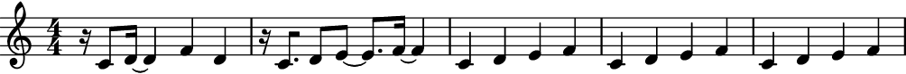With a high
pitch_score_bias, pitch convergence will tend to be faster at the expense of attack points:>>> measure_maker = auxjad.FittestMeasureMaker( ... pitch_target=["c'", "d'", "e'", "f'"], ... pitch_genes=["c'", "d'", "e'", "f'", "g'", "a'", "b'", "c''"], ... attack_point_target=[0, 4, 8, 12], ... attack_point_genes=list(range(16)), ... pitch_score_weight=0.95, ... ) >>> notes = measure_maker.output_n(5) >>> staff = abjad.Staff(notes) >>> abjad.f(staff) \new Staff { \time 4/4 r8 c'16 d'16 ~ d'4 ~ d'8 e'4 d'8 r8 c'16 d'16 ~ d'2 ~ d'16 e'8. c'16 d'8. ~ d'8. e'16 ~ e'4 f'4 c'16 d'8. ~ d'8. e'16 ~ e'4 f'4 c'4 ~ c'16 d'8 e'16 ~ e'4 f'4 }
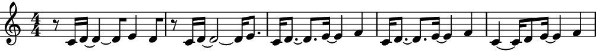In contrast, a low
pitch_score_bias, attack point convergence will tend to be faster at the expense of pitches:>>> measure_maker = auxjad.FittestMeasureMaker( ... pitch_target=["c'", "d'", "e'", "f'"], ... pitch_genes=["c'", "d'", "e'", "f'", "g'", "a'", "b'", "c''"], ... attack_point_target=[0, 4, 8, 12], ... attack_point_genes=list(range(16)), ... pitch_score_weight=0.05, ... ) >>> notes = measure_maker.output_n(5) >>> staff = abjad.Staff(notes) >>> abjad.f(staff) \new Staff { \time 4/4 e'16 c''4.. f'4 c''4 e'4 d'4 d'4 f'4 e'4 d'4 d'4 f'4 e'4 d'4 d'4 f'4 e'4 d'4 d'4 f'4 }
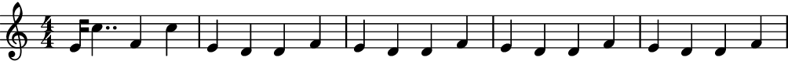attack_points_mode:When using this class in attack points mode, each note will last a single unit instead of being extended until the next attack point:
>>> measure_maker = auxjad.FittestMeasureMaker( ... pitch_target=["c'", "d'", "e'", "f'"], ... pitch_genes=["c'", "d'", "e'", "f'", "g'", "a'", "b'", "c''"], ... attack_point_target=[0, 4, 8, 12], ... attack_point_genes=list(range(16)), ... attack_points_mode=True, ... ) >>> notes = measure_maker.output_n(5) >>> staff = abjad.Staff(notes) >>> abjad.f(staff) \new Staff { \time 4/4 e'16 r8. c'16 r16 r16 g'16 r4 f'16 r8. c'16 r8. d'16 r8. e'16 c'16 r4. c'16 r8. d'16 r16 r16 e'16 r4 f'16 r8. c'16 r8. d'16 r8. e'16 r8. f'16 r8. c'16 r8. d'16 r8. e'16 r8. f'16 r8. }
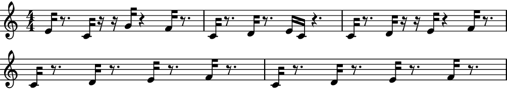
Methods
__call__()Calls the genetic algorithm process for one iteration, returning an
abjad.Selection.__init__(*, pitch_target, pitch_genes, …)Initialises self.
__iter__()Returns an iterator, allowing instances to be used as iterators.
__len__()Returns the number of genes in each individual.
__next__()Calls the genetic algorithm process for one iteration.
__repr__()Returns interpreter representation of
target’s of both instances of the genetic algorithm (pitches and attack points).output_n(n)Goes through
niterations of the genetic algorithm process and outputs a singleabjad.Selection.reset()Resets that genetic algorithm.
Attributes
List of possible genes that make up all attack point individuals.
Optional initial attack point individual.
Read-only property, returns a list with all the population of the current generation.
Target attack point individual used for evaluation.
When
True, each note will last only for the duration of the unit, instead of extending it to the next attack point.Unit for the duration grid.
The index used in the evaluation function.
Read-only property, returns the fittest individual of the current population.
Read-only property, returns the score of the fittest individual of the current population.
Read-only property, returns the fittest individual of the current population as an
abjad.Selection.Read-only property, returns the fittest individual of the current population.
Read-only property, returns the number of the current generation (initial generation is 0).
Number of the best-fit individuals that survive into the next generation.
Percentage of the total population who will experience mutation.
Given an individual selected to undergo mutation, this index gives the percentage of genes of that individual which will be mutated.
When
True, a time signature won’t be added to the first leaf of the output.List of possible genes that make up all pitch individuals.
Optional initial pitch individual.
Read-only property, returns a list with all the population of the current generation.
By default, the score of each measure gives equal weight to pitches as it gives to attack points.
Target pitch individual used for evaluation.
Number of individuals in any given generation.
Read-only property, returns the list of individual scores of the current population.
Number of the best-fit individuals that are selected to be parents of the next generation.
Read-only property, returns the target as an
abjad.Selection.List of time signatures to be enforced on output.
Read-only property, returns the total duration of the window.
Number of units per window.
-
__call__() → abjad.core.Selection.Selection[source]¶ Calls the genetic algorithm process for one iteration, returning an
abjad.Selection. Generates a new generation of lengthpopulation_sizevia reproduction and mutation processes and scores each individual using the evaluation function.
-
__init__(*, pitch_target: list, pitch_genes: list, attack_point_target: list, attack_point_genes: list, duration_unit: abjad.utilities.Duration.Duration = Duration(1, 16), units_per_window: int = 16, pitch_initial_individual: Optional[list] = None, attack_point_initial_individual: Optional[list] = None, population_size: int = 100, select_n_parents: int = 10, keep_n_parents: int = 0, mutation_chance: float = 0.2, mutation_index: float = 0.1, evaluation_index: float = 0.2, omit_time_signature: bool = False, time_signatures: Optional[list] = None, attack_points_mode: bool = False, pitch_score_bias: float = 0.5) → None[source]¶ Initialises self.
-
__next__() → None[source]¶ Calls the genetic algorithm process for one iteration. Generates a new generation of length
population_sizevia reproduction and mutation processes and scores each individual using the evaluation function.
-
__repr__() → str[source]¶ Returns interpreter representation of
target’s of both instances of the genetic algorithm (pitches and attack points).
-
property
attack_point_genes¶ List of possible genes that make up all attack point individuals.
-
property
attack_point_initial_individual¶ Optional initial attack point individual.
-
property
attack_point_population¶ Read-only property, returns a list with all the population of the current generation.
-
property
attack_point_target¶ Target attack point individual used for evaluation.
-
property
attack_points_mode¶ When
True, each note will last only for the duration of the unit, instead of extending it to the next attack point.
-
property
duration_unit¶ Unit for the duration grid. Default is abjad.Duration((1, 16)).
-
property
evaluation_index¶ The index used in the evaluation function. This index will be raised by the difference between indices of the target value and the current value. Consider the following example, where the available genes are
['A', 'B', 'C', 'D', 'E', 'F']and the target is['B', 'A', 'A', 'C']. Suppose an individual has the genes['D', 'D', 'A', 'B'].To evaluate this individual, first the algorithm finds the indices of both the target’s genes (in this case,
[1, 0, 0, 2]) and also of the individual to be evaluated (in this case,[3, 3, 0, 1]). It then scores each element of this individual against the target using:difference = abs(target_gene_index - individual_gene_index) element_score = evaluation_index ** difference
Thus, when the difference is
0, the score of this element is1.0. The higher the difference, the smaller the value; this decay can be controlled using this very property, whose default value is0.2. Thus when the difference is1or-1, the score is0.2 ** 1 = 0.2, when the difference is2or-2, the score is0.2 ** 2 = 0.04, and so on. The total score of an individual will be given by the normalised sum of the evaluation of each of its genes.
-
property
fittest_attack_point_individual¶ Read-only property, returns the fittest individual of the current population.
-
property
fittest_individual_score¶ Read-only property, returns the score of the fittest individual of the current population.
-
property
fittest_measure¶ Read-only property, returns the fittest individual of the current population as an
abjad.Selection.
-
property
fittest_pitch_individual¶ Read-only property, returns the fittest individual of the current population.
-
property
generation_number¶ Read-only property, returns the number of the current generation (initial generation is 0).
-
property
keep_n_parents¶ Number of the best-fit individuals that survive into the next generation. Default is
0.
-
property
mutation_chance¶ Percentage of the total population who will experience mutation.
-
property
mutation_index¶ Given an individual selected to undergo mutation, this index gives the percentage of genes of that individual which will be mutated.
-
property
omit_time_signature¶ When
True, a time signature won’t be added to the first leaf of the output.
-
output_n(n: int) → abjad.core.Selection.Selection[source]¶ Goes through
niterations of the genetic algorithm process and outputs a singleabjad.Selection.
-
property
pitch_genes¶ List of possible genes that make up all pitch individuals.
-
property
pitch_initial_individual¶ Optional initial pitch individual.
-
property
pitch_population¶ Read-only property, returns a list with all the population of the current generation.
-
property
pitch_score_bias¶ By default, the score of each measure gives equal weight to pitches as it gives to attack points. Changing this to a different value will make the pitch score contribute more or less to the total score of a measure.
-
property
pitch_target¶ Target pitch individual used for evaluation.
-
property
population_size¶ Number of individuals in any given generation.
-
property
scores¶ Read-only property, returns the list of individual scores of the current population. Scores are normalised.
-
property
select_n_parents¶ Number of the best-fit individuals that are selected to be parents of the next generation. They also survive into the next generation.
-
property
target_music¶ Read-only property, returns the target as an
abjad.Selection.
-
property
time_signatures¶ List of time signatures to be enforced on output. It is important to note that
omit_time_signaturemust beTruefor it to take effect.
-
property
total_duration¶ Read-only property, returns the total duration of the window.
-
property
units_per_window¶ Number of units per window. Default is 16.